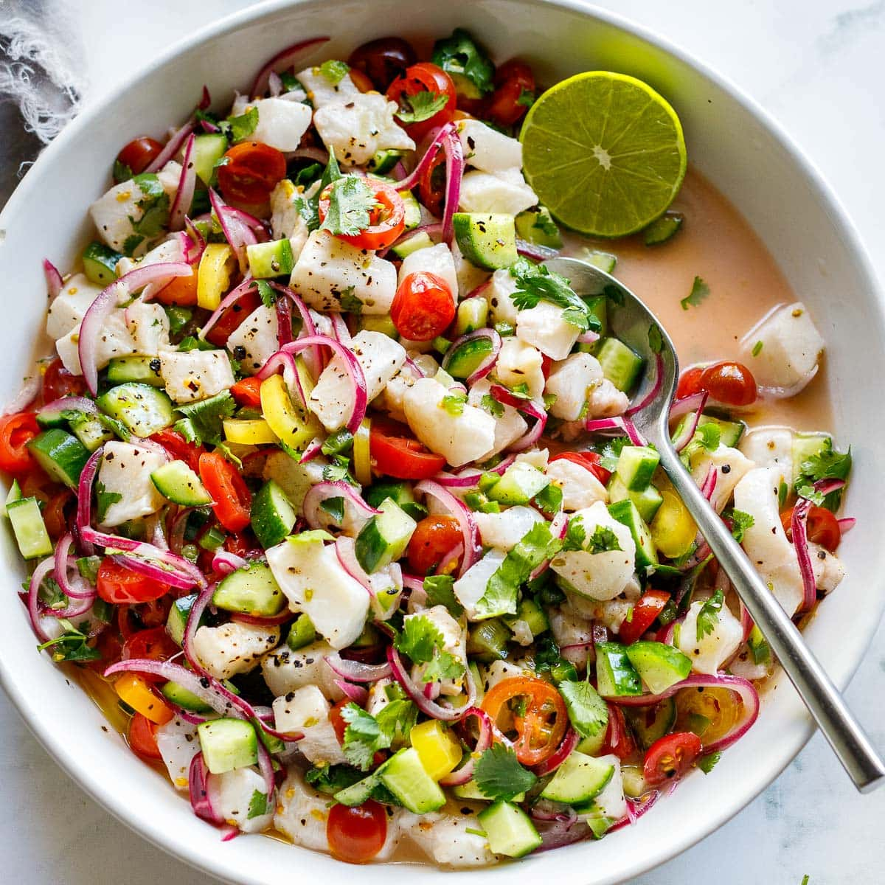

Ceviche

Ceviche is a popular Latin American seafood dish made from raw fish or shellfish 'cookied' in fresh
citrus juice, usually lime or lemon
Ingredients
- 500g firm white fish
- 8 limes (juice)
- 1 red onion (sliced into rings)
- 2-3 green chillies (finely chopped)
- Bunched coriander (roughly chopped)
- 2 tbsp extra-virgin olive oil
- Pinch caster sugar
Instructions
- In a large glass bowl, combine the fish, lime juice, and onion. Cover with cling film and
place in the fridge for 1 hour 30 minutes
- Remove the fish and onion from the lime juice and place in a bowl. Add the other ingredients,
stir gently, then season with salt and sugar.
Home